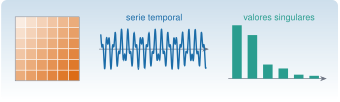

Matrices estructuradas
Álgebra lineal · A1

Una matriz con estructura es una matriz cuyas entradas no son independientes: están repetidas, son nulas casi todas, o siguen una regla. Esa estructura se paga y se cobra tres veces. Se cobra en memoria y en tiempo de cálculo, en propiedades que se pueden demostrar, y en algoritmos más rápidos y más estables. Se paga cuando la estructura se pierde: un ruido que rompe un rango, un redondeo que hace perder una simetría.
En vibraciones y análisis de señales aparecen siempre las mismas cuatro familias, y esta unidad las recorre una a una:
- las matrices de masa y rigidez de una estructura: simétricas, definidas positivas, dispersas y de banda;
- las matrices de Toeplitz, que son las covarianzas de una señal estacionaria;
- las matrices de Hankel, que son las que se construyen al desplazar una señal en el tiempo y de las que parten ERA y SSI;
- las matrices circulantes, que la transformada discreta de Fourier diagonaliza.
Tiempo orientativo: unas 4 horas, con los cuatro laboratorios y los ejercicios. Nivel: intermedio. En cada apartado hay tres capas: la intuición (figuras y laboratorios), el fundamento (definiciones, teoremas y demostraciones plegables) y la aplicación (ejemplos con registros reales o con modelos de estructuras). Las simulaciones se rotulan «Simulación n» y los resultados de Julia se calculan al compilar la página.
Objetivos y prerrequisitos
Objetivos. Al terminar esta unidad sabrás:
- calcular normas y números de condición y explicar por qué un sistema lineal puede perder cifras decimales;
- reconocer una matriz simétrica, ortogonal, definida positiva, proyector, de Gram o de covarianza y decir qué significa físicamente;
- construir las matrices de masa y rigidez de una cadena de masas y muelles, representarlas como dispersas y estimar lo que se ahorra;
- construir matrices de Toeplitz, resolver las ecuaciones de Yule–Walker y predecir una señal;
- construir matrices de Hankel, interpretar sus valores singulares y reconstruir una señal con SSA;
- distinguir las cuatro matrices de Hankel que aparecen en identificación (trayectoria, parámetros de Markov, covarianzas y datos);
- calcular una convolución circular con la FFT y saber cuándo coincide con la lineal;
- comparar dos formas modales con el criterio MAC.
Prerrequisitos. J1, J2.5 y J3.3: Julia básico, simulación con semilla y álgebra lineal numérica. Para los ejemplos de vibraciones, las ideas de masa, rigidez y frecuencia natural de M5.
Reparto con otras unidades. Aquí se explica el concepto y se implementan los ejemplos; la teoría de la FFT, la DFT práctica y el método de Welch están en M3.5–M3.6, y los algoritmos de identificación completos (ERA, FDD, SSI) en M7.5–M7.9. Esta unidad prepara la matemática de esos métodos y los enlaza.
Apartados
| Id | Apartado |
|---|---|
| A1.1 | Fundamentos de álgebra matricial |
| A1.2 | Matrices fundamentales |
| A1.3 | Matrices dispersas, de banda y por bloques |
| A1.4 | Matrices de Toeplitz |
| A1.5 | Matrices de Hankel |
| A1.6 | Matrices circulantes |
| A1.7 | Otras matrices con aplicación dinámica |
| A1 | Práctica y cierre |